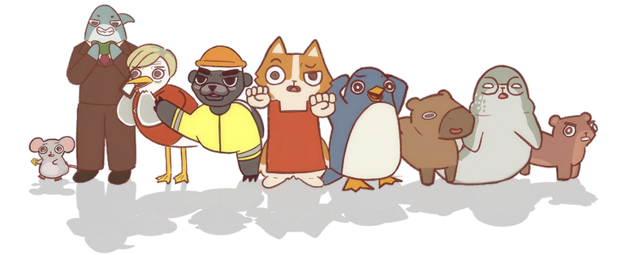

0
Slack messages read
An overview of three years of user research interviews
47 jobseekers, 6 recruiters & employers, and 3 ecosystem
Every interview was tagged against 14 themes and checked against 26 months of Amplitude product data.
14 themes across 56 tagged interviews, praise vs. pain.
Job seekers are pouring hours a day and hundreds of applications across a half dozen boards into a market that rarely replies, the exact grind Bandana exists to collapse.
against 17 negative mentions.
The only theme that never got a positive response. Users may also associate this common job search frustration with Bandana as a product.
You can apply and apply and apply. And it's like you don't even get a denial.
62% paid social on iOS. Sarah's study, n=21.
29% word of mouth in markets outside NYC. Katie's study, n=21.
"I love using Bandana a lot."
"None of these are relevant to me at all."
The matching engine decides who loves you.
Generalist and blue collar seekers consistently found relevant work. Niche specialists (content, video, creative, DEI) mostly didn't.
The #1 frustration every year since 2024, raised unprompted by 36% of jobseekers.
17 negative mentions. "Even if I requested it? Never." Rejections arriving 2 months late. Users beg for any signal that an application was even opened.
Bandana Match is "nearly invisible." Users can't tell the Apply button from a normal one.
One user never found the Job Tracker. Another had an account but was never enrolled in emails. Every hesitant Bandana Apply user cited the same fear: loss of control. Bandana Apply opt ins fell ~60%, from a peak of 6.1k a month in Oct '25 to 2.4k by May '26, even as MAU kept growing.
One user logged zero dead links across 319 applications, rare praise in this category.
Users hit postings that vanished on click, a listing that never existed, and distrust of anything older than 3 weeks.
Close the silence by giving applicants a status and a reason, the frustration users name most.
Match people to roles that fit their niche and experience level, not generic or senior listings.
Cut email noise to fewer, sharper alerts from one sender at a cadence users choose.
Keep listings fresh and honest so stale and ghost postings stop eroding trust.
Help users find the features that already work, like Match, the tracker, and auto apply.
Ease application friction with direct apply and resume help against ATS and AI screening.
Build on what users already love, the upfront pay transparency and the location map.

Correlation ≠ causation.
This curve shows reach, not proof of product market fit. The climb coincides with paid social spend, the Apr to May SMS & AMB blasts, and seasonality.
With 62% of recent users acquired via paid ads, growth is marketing driven as much as product driven. J's study adds that product quality isn't what sends users to competitors.
And Bandana Apply opt ins have fallen faster than reach (−62% vs −11% from peak), likely the truer engagement signal.